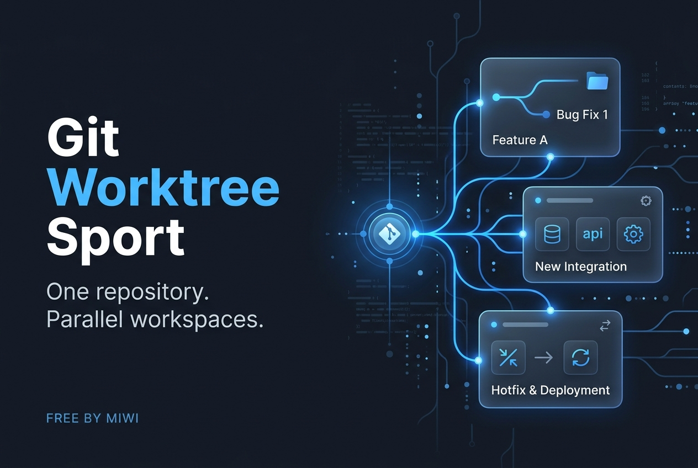
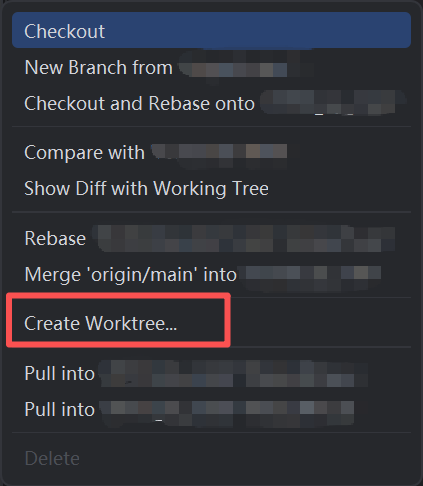
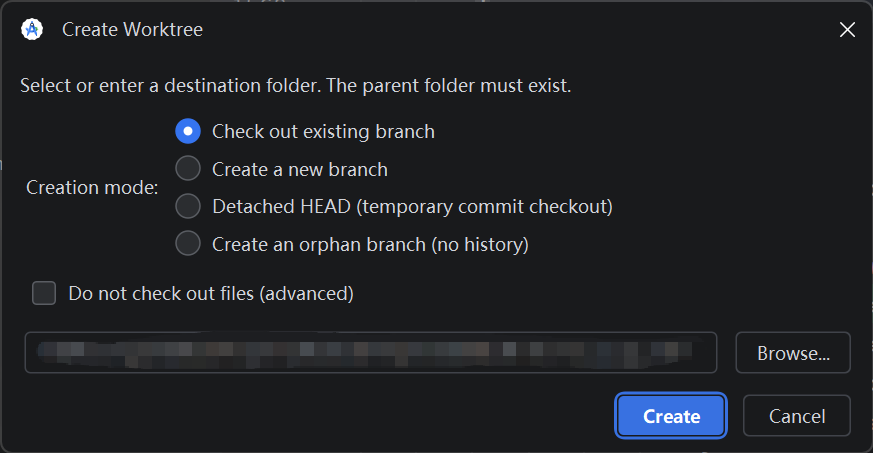
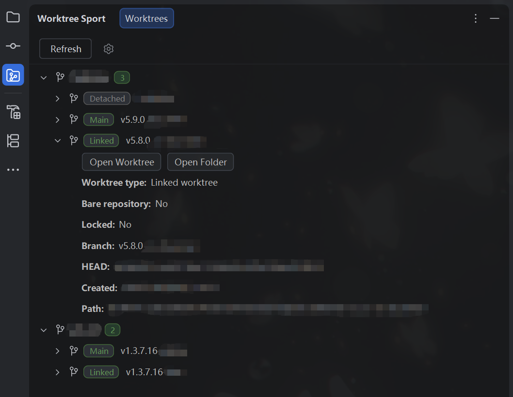
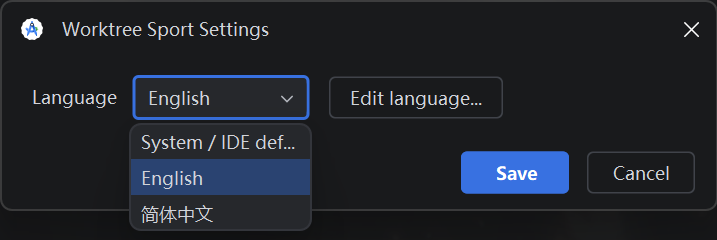
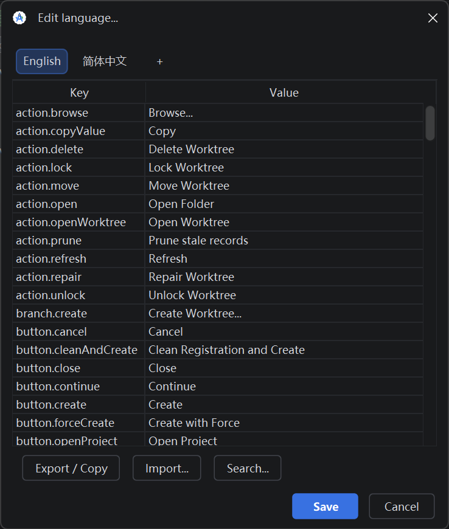
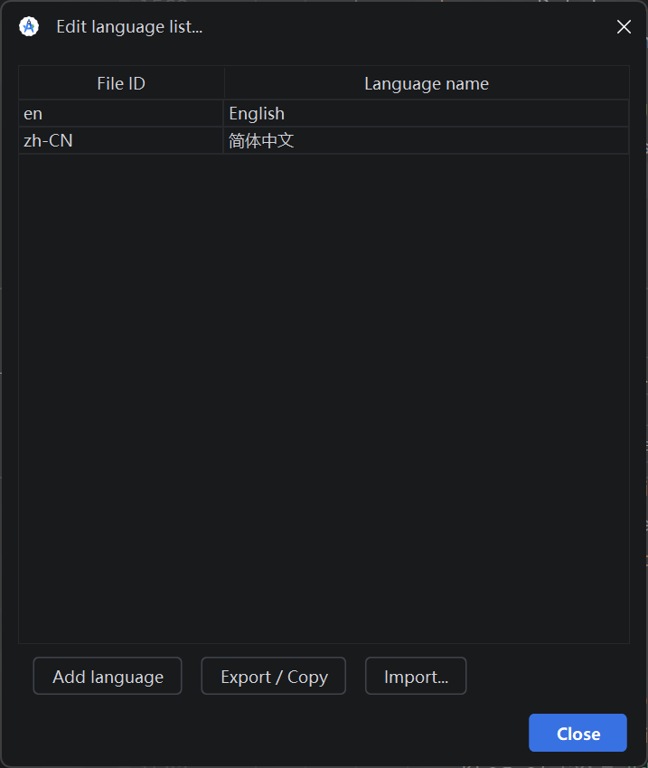

Git Worktree Sport
One repository. Parallel workspaces.
Keep each task in its own directory. Create, inspect, and manage Git worktrees from your IDE without disturbing the files in another checkout.

The six screenshots below are the author's actual reference images, not generated UI mockups. Paths and repository details are obscured. Some screenshots show the earlier two-language interface; this release has ten language packs and an additional empty-area creation entry point.
From installation to your first workspace
- Install the ZIP with Settings → Plugins → Install Plugin from Disk... and restart.
- Open a Git project, then choose Git → Worktree Sport → Refresh.
- Right-click empty space in the manager to search or scroll local and remote branches, grouped by repository. Click a branch, then choose Create Worktree... in its right-side submenu.
- The same creation action is available in the IDE's Git Branches popup, as shown below.

Choose a branch strategy, then a folder

| Mode | When to use it |
|---|---|
| Existing branch | Work on a branch that already exists. Remote selections reuse or create a local tracking branch. |
| New branch | Start a task from a chosen branch or commit, using an explicit new branch name. |
| Detached HEAD | Inspect or test a commit without attaching the workspace to a branch. |
| Orphan branch | Start a new branch without inherited commit history. Requires support in the installed Git. |
Do not check out files is off by default. Leave it off for ordinary development. Turn it on only for workflows that intentionally register the workspace before populating files. It is unavailable for orphan mode.
Folder and conflict rules
- Type the complete destination path or use Browse.... The parent must exist; the target must be absent or empty.
- An active worktree is not duplicated. A non-empty directory is not overwritten.
- A stale registration for a missing directory can be pruned after confirmation before creation is retried.
- If the branch is checked out elsewhere, force creation requires explicit confirmation.
The path dialog stays open while a blocking progress indicator prevents repeat actions. Success offers Open Project or Close. Close reveals the new item and flashes only its background blue for two seconds. Canceling project opening does not undo creation.
See every workspace in context

Status and identity
Inspect main/linked/detached type, bare state, actual Git lock status, branch, full HEAD, folder creation time and complete path. Counts do not include parentheses. Missing or prunable paths are marked.
Open and copy
Open Worktree uses the IDE's project-opening flow; Open Folder opens the system file manager. Already-open worktrees omit Open Worktree. Right-click a detail row to copy only its value.
Refresh reads local Git registration; it does not fetch remote branches. Creation time uses directory metadata and is not a historical Git timestamp.
Understand what each operation changes
| Action | Effect and safeguards |
|---|---|
| Lock / Unlock | Add/remove Git's retention marker. It prevents pruning registration, not editing files. It is not a filesystem permission lock. |
| Repair | Repair administrative links after an external directory move. Updates metadata, not source files or commits. |
| Prune | Shown for missing/prunable registration instead of Delete. Previews repository-wide stale records. Does not delete existing directories and is subject to Git's expiry rules. |
| Move | Move a linked directory and update its Git registration. The destination must not exist and its parent must exist. |
| Delete | Remove a valid linked directory and registration. Dirty or untracked content triggers a separate force-removal warning. Confirming force permanently deletes those files. |
Main and current-project protection: The main worktree and worktrees open as projects in the current IDE session hide Prune, Move, Delete, Lock, and Unlock. Protection is based on actual directories, not a branch name, and does not fabricate a Git lock. A Git lock additionally protects other linked worktrees from Move and Delete.
Operations display a confirmation where appropriate and a blocking progress state. A failed operation is reported rather than silently treated as success. Make independent backups of work you cannot afford to lose.
Follow your IDE, or make the wording yours
The settings button is beside Refresh. Choose the IDE default or a language pack. UI messages use the running IDE's actual product name. The Overview itself stays in English rather than stacking translated copies.

Ten bundled packs
The current release includes English, 简体中文, 繁體中文, 日本語, 한국어, Deutsch, Français, Español, Português (Brasil), and Русский.
Translations are initial language packs and can be refined. Existing user-edited wording and language names survive upgrades.

Edit translations as a table
- Keys are read-only; values are editable.
- Click tabs to switch and double-click names to rename.
- + copies the English baseline into a new language.
- Ctrl+F or Search opens the search bar; optionally include keys.
- Export copies key=value text. Import validates missing, duplicate and unknown keys before applying.
- Canceling a changed session offers Save, Discard, or Continue. Discard restores all session edits, including added tabs.

Maintain the catalog separately
languages.json maps short file IDs to display names. Each translation has its own JSON file. The language-list editor supports renaming, validated import/export, and Add language, which opens the translation editor on a newly created tab.
New bundled packs are appended during upgrades without replacing custom names or existing translations.
Requirements and scope
This build targets IntelliJ Platform 262.9437.185 or newer with the Git plugin. It was built against Android Studio Panda 3 and validated on Windows. Android Studio is available for macOS, and the plugin uses cross-platform IDE and Java APIs; however, this release has not been runtime-tested on macOS. Other IDE products/builds and operating systems require separate testing.
Git commands use the IDE-configured local Git executable. The plugin is free, has no purchase flow, and does not upload your repository to a hosted service. Native IDE checkout, merge, rebase and deployment features are not part of this plugin.
Author: MiWi · Version: 1.0.1 · Screenshot references supplied by the author · English documentation